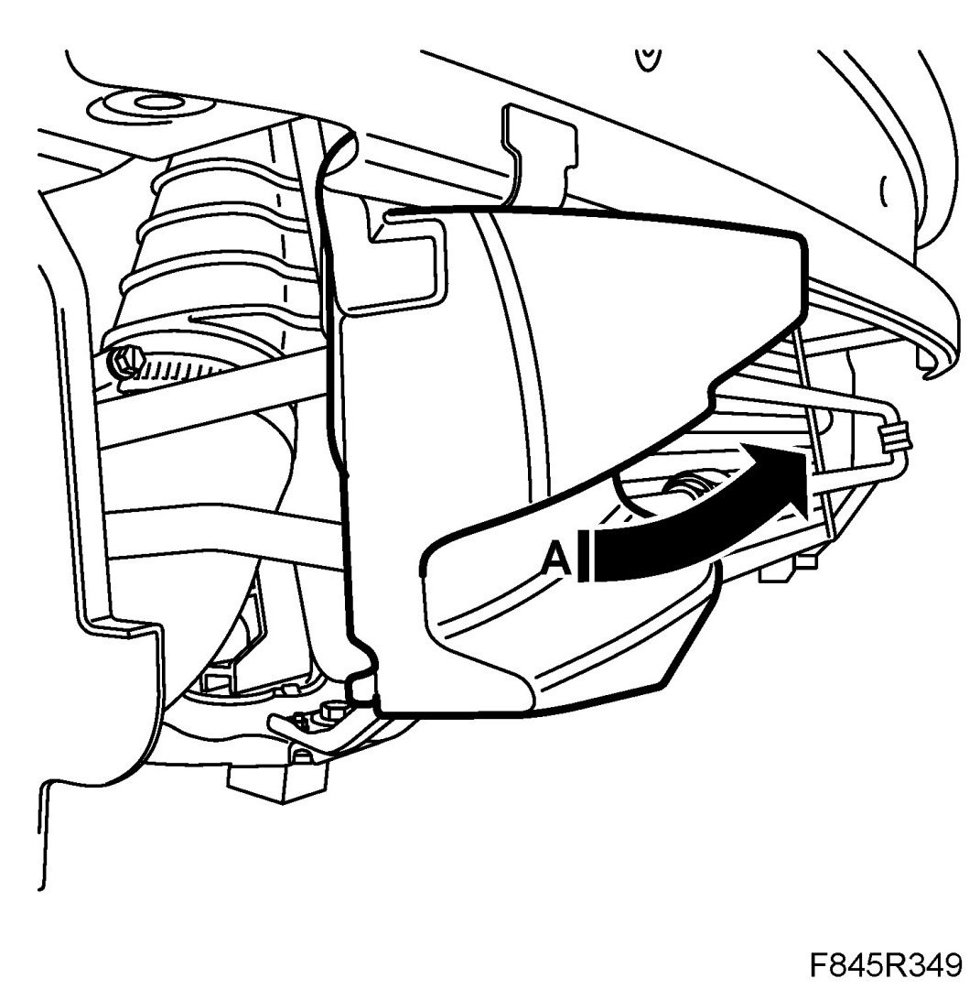
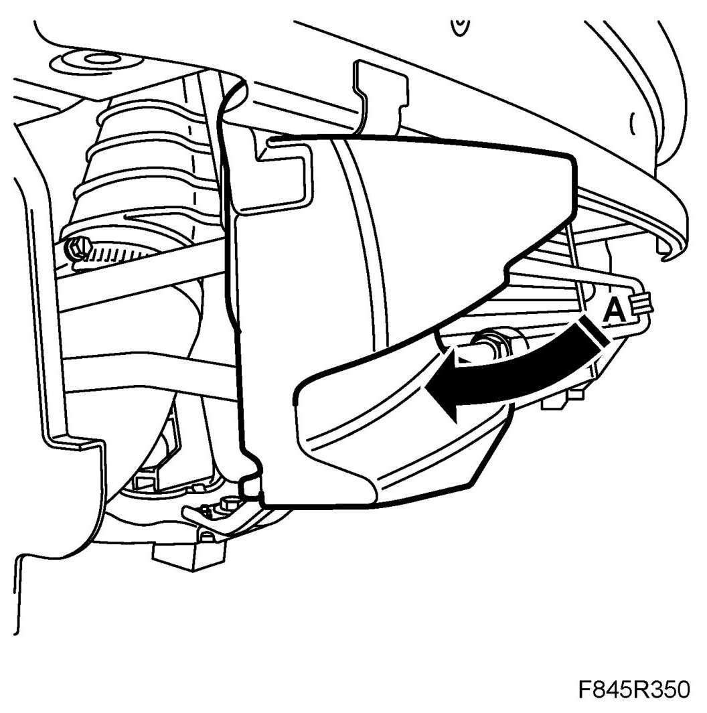

Pedestrian Protection
Pedestrian Protection
To remove
1. Remove the front bumper shell.
Remove Bumper shell, front, 9-3X.
2. Unhook the cell block (A), right and left-hand sides.

To fit
1. Hook on the cell block (A), right and left-hand sides.

2. Fit the front bumper shell.
Fit Bumper shell, front, 9-3X.